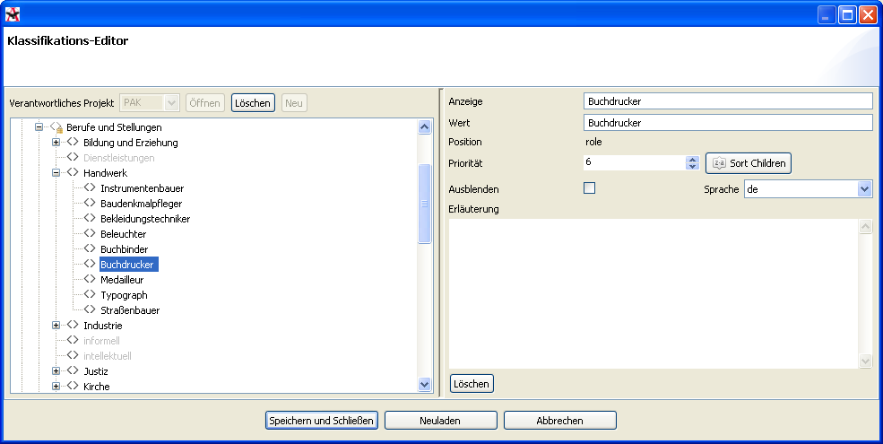
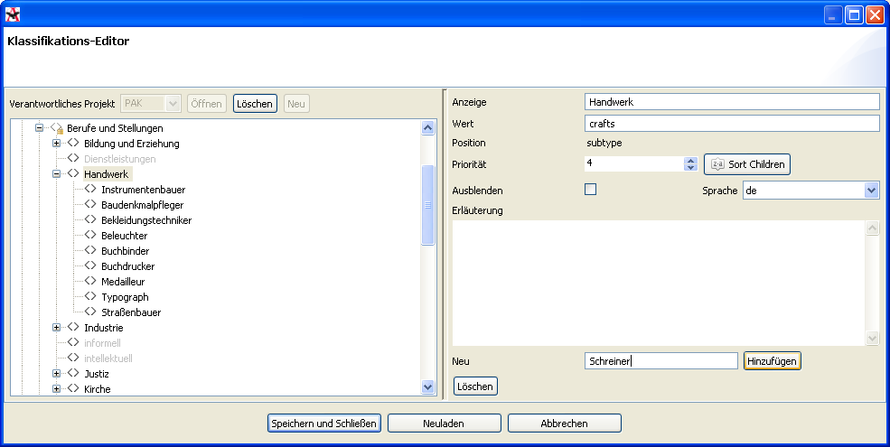

Wählen Sie im Klassifikationseditor Ihr Projekt aus und klicken Sie auf "‘Öffnen"’. Sie sehen jetzt das Klassifikationsschema Ihres Projektes.
Das Klassifikationsschema umfasst drei Bereiche:
 eine einfache Liste semantischer Klassifikationen
eine einfache Liste semantischer Klassifikationen
 eine hierarchische Liste von Beziehungstypen
eine hierarchische Liste von Beziehungstypen
 mehrere hierarchische Listen für das Markup (z.B. Organisation oder
Personenname)
mehrere hierarchische Listen für das Markup (z.B. Organisation oder
Personenname)
Wählen Sie jetzt einen Eintrag aus einer der Listen. Dabei kann wie üblich über die Plus- und Minuszeichen oder Doppelklicks durch die verzweigten Listen navigiert werden. Auf der rechten Seite sehen Sie im Feld "‘Anzeige"’ den Namen der Kategorie, der auf der Oberfläche des Programmes angezeigt wird. Darunter sehen Sie im Feld "‘Wert"’ den (meist englischen) Ausdruck, welcher von der Datenbank verwendet wird. Nur Administratoren können neue Einträge hinzufügen, löschen und umbenennen. Darüber hinaus gibt es obligatorische Einträge, die vom PDR vorgegeben werden. Diese können nicht gelöscht oder umbenannt werden, und sind deshalb mit einem Schloss gekennzeichnet. Jeder Benutzer kann jedoch die Anzeige der Einträge beeinflussen, indem das Häkchen "‘ausblenden"’ gesetzt oder entfernt wird (siehe unten).
In den Listen, die Beziehungen und Markups definieren, können Einträge auf bis zu drei verschiedenen Hierarchiestufen angelegt werden. Dadurch können genauere Spezifizierungen hinsichtlich der Struktur vorgenommen werden z.B. in Form von Kategorien für Berufe, bei denen die Einträge "‘Buchdrucker"’ und "‘Straßenbauer"’ dem Eintrag "‘Handwerk"’ untergeordnet sind.

Um für einen Eintrag solch ein untergeornetes Element anzulegen, muss dieser zuerst in der linken Hälfte des Klassifikations-Editor markiert werden. Ist der entsprechende Eintrag markiert, kann durch das mit "‘Neu"’ betitelte Textfeld rechts unten ein Name für das untergeordnete Element festgelegt und durch anschließendes Bestätigen des "‘Hinzufügen"’-Buttons erstellt werden.

Werden für einen Eintrag mehrere Untereinträge definiert, so können diese auf Wunsch im rechten Einstellungsbereich des Obereintrags mittels "‘Sort Children"’-Buttons alphabetisch sortiert werden. Alternativ können für die untergeordneten Elemente unter "‘Priorität"’ Zahlenwerte eingetragen werden und die Liste der Einträge nach diesen aufsteigend sortiert wird. Eine weitere Möglichkeit ist das Verschieben einzelner Einträge per Drag-and-Drop, d.h. durch Anklicken und mit gedrückter Maustaste durchgeführtes Verschieben. Dadurch können auch z.B. falsch einsortierte Einträge innerhalb der Listen verschoben werden
BILD: drag-and-drop windows-explorer-style
Wird ein Eintrag nicht mehr benötigt und soll daher entfernt werden, so geschieht dies durch Markieren und einen Klick auf "‘Löschen"’. Um den Namen eines Eintrag zu ändern, muss dieser lediglich unter "‘Anzeige"’ editiert werden. Da nur Administratoren diese Rechte besitzen, haben Nicht-Administratoren lediglich die Möglichkeit nicht benötigte Einträge mit einem Häckchen unter "‘Ausblenden"’ zu versehen. Dadurch werden bei der Dateneingabe diese Elemente, z.B. bei den Markups, nicht mehr mitgelistet, was zu mehr Übersicht führt.